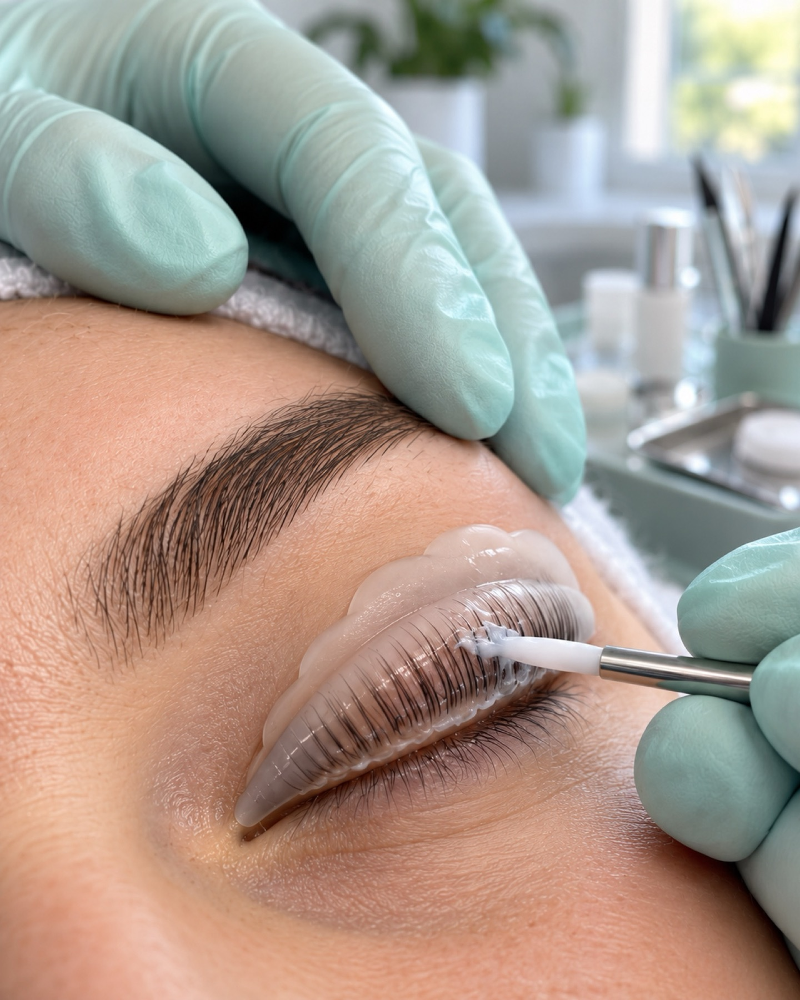

Wimpernlifting
Ihre eigenen Wimpern werden in Form gebogen. Verlängerungen braucht es dafür nicht.
- ZielEin offener Blick mit eigenen Wimpern.
- AblaufBeratung, Formen der Wimpern, Pflege zum Abschluss.
Kosmetik in Freiburg im Breisgau
Wimpern, Permanent Make-up, Nägel, Füße, Massage und Haarentfernung an der Andreas-Hofer-Straße. Sie wissen vorher, was wir tun, wie lange es etwa dauert und was danach zu beachten ist.

Leistungen
Bei jeder Leistung steht, worum es geht und wie es abläuft. Wie lange es dauert, sagen wir Ihnen beim Termin. Das hängt von Ihrem Wunsch ab.
Ihre eigenen Wimpern werden in Form gebogen. Verlängerungen braucht es dafür nicht.
Einzelne Wimpern werden auf Ihre eigenen gesetzt, für mehr Länge und Fülle.
Brauen, Lidstrich oder Lippen werden dezent und dauerhaft betont.
Gründliche Pflege für Füße und Nägel, von Hornhaut bis Nagelform.

Von der klassischen Maniküre bis zum Nageldesign mit Farbe und Form nach Ihrem Geschmack.

Sanfte Massagen zum Entspannen und manuelle Lymphdrainage.
Sanfte Haarentfernung mit Wachs oder Zuckerpaste.
Piercing mit Beratung zu Platzierung und Schmuck, hygienisch und in Ruhe.
Beratung zuerst
Vor jeder Behandlung reden wir über Ihre Haut, Ihre Wünsche und darüber, was Sie nicht vertragen. Danach entscheiden Sie, was gemacht wird. Heilversprechen gibt es bei uns nicht.
Schematische Darstellung, nicht maßstabsgetreu.
Ergebnisse
Die beiden Grafiken zeigen nur beispielhaft, worauf wir bei Wimpern achten. Echte Ergebnisse sehen Sie im Studio oder auf Instagram.
Gerade Wimpern, der Blick wirkt geschlossener.
Geschwungene Wimpern, der Blick wirkt offener.

Über das Studio
Das Studio liegt an der Andreas-Hofer-Straße 130. Wir sind ein kleines Team und erklären jede Behandlung in Ruhe. Sauber arbeiten und ehrlich beraten ist uns wichtiger als der nächste Trend.
Wir sprechen Deutsch, Ukrainisch und Englisch.
Ablauf
Wir besprechen Ihren Wunsch, Ihre Haut und was Sie vorab wissen sollten.
Wir arbeiten sorgfältig und sagen Ihnen jeden Schritt, bevor er kommt.
Sie bekommen Hinweise für zu Hause und wissen, wann ein nächster Termin sinnvoll ist.
Behandlungsdetails
Ein offener, betonter Blick. Danach die Wimpern zunächst nicht nass werden lassen und nicht reiben. Genaue Hinweise bekommen Sie im Studio.
Dezent und dauerhaft betont. Direkt nach der Behandlung kann die Haut gerötet sein. Sie bekommen einen Pflegeplan mit, über eine Auffrischung sprechen wir dann.
Gepflegte Hände und Füße. Danach hilft regelmäßiges Eincremen. Bei Gel- oder Designnägeln tragen Sie beim Putzen am besten Handschuhe.
Entspannung. Trinken Sie danach ausreichend Wasser und gönnen Sie sich etwas Ruhe. Bei Beschwerden sagen Sie uns das vorab.
Möglichst schonend. Nach der Haarentfernung die Haut nicht reizen. Beim Piercing erklären wir die Pflege Schritt für Schritt.
Einblicke
Häufige Fragen
Kommen Sie am besten ungeschminkt, wenn Wimpern oder Brauen behandelt werden. Sagen Sie uns vorab, wenn Sie Allergien haben oder Medikamente nehmen.
Das hängt von der Leistung und Ihrem Wunsch ab. Bei der Terminvergabe nennen wir Ihnen die voraussichtliche Dauer.
Zu jeder Behandlung bekommen Sie Pflegehinweise mit. Bei Fragen melden Sie sich einfach telefonisch oder per Instagram-Nachricht.
Bitte sagen Sie so früh wie möglich telefonisch oder per Nachricht ab, damit wir den Termin an jemand anderen vergeben können.
Kontakt & Anfahrt
Wir melden uns telefonisch oder per Nachricht bei Ihnen.
Danke, wir melden uns.